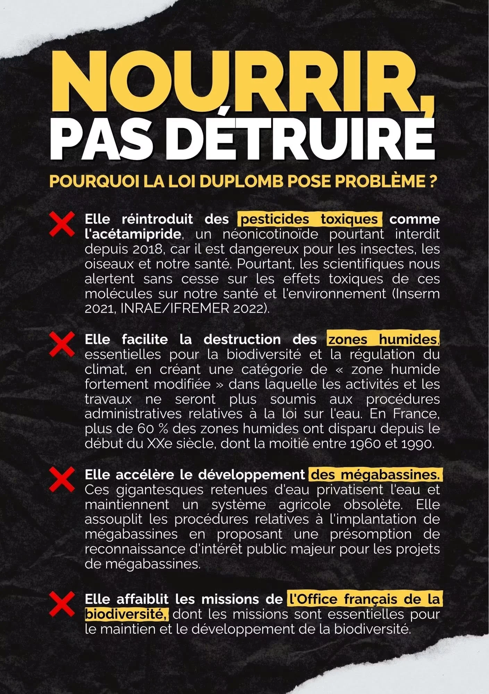
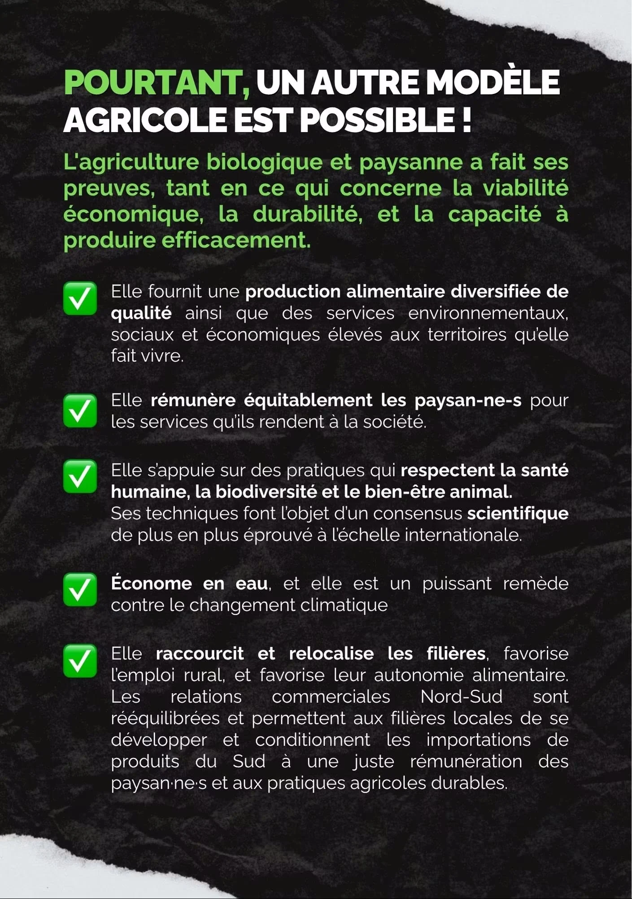

Appel archivé
Contre la loi Duplomb, rendez-vous à Port Boinot le 29 juin
Date de mise à jour indiquée par Facebook · 26 juin 2025
Repères éditoriaux
Nous avons relayé l’appel des organisations mobilisées à Niort. À cause des fortes chaleurs annoncées, la manifestation du dimanche 29 juin a été avancée à 10 h à Port Boinot. L’affiche annonçait aussi un pique-nique et une baignade à midi.
Texte de la publication · Bassines Nonmerci
En Deux-Sèvres, on se mobilise contre la Loi Duplomb ! On vous attend nombreux-ses dimanche 29 juin à Niort !
Petit changement d’horaires, pour des raisons de météo (vu les températures annoncées), on vous donne rendez-vous à 10H à Port Boinot !
Pour rappel, le 30 juin, la loi Duplomb sera discutée en Commission Mixte Paritaire (CMP), à huis clos.
Cette loi pose de nombreux problèmes, entre autres :
Elle réintroduit des pesticides toxiques, comme l’acétamipride, un néonicotinoïde pourtant interdit depuis 2018. Ce pesticide est nocif pour les insectes, les oiseaux… et notre santé. Les études scientifiques (Inserm 2021, INRAE/IFREMER 2022) sont sans appel.
Elle facilite la destruction des zones humides en créant une nouvelle catégorie juridique permettant de contourner les protections environnementales. Rappel : en France, 60 % des zones humides ont disparu en un siècle.
Elle accélère et facilite l’installation de méga-bassines, ces infrastructures massives qui privatisent l’eau au profit d’une agriculture intensive dépassée, en les reconnaissant d’« intérêt public majeur ».
Elle facilite l’implantation des fermes-usines en relevant les seuils des ICPE (Installations Classées pour la Protection de l’Environnement). Cela revient à permettre à des élevages géants – pourtant très polluants (nitrates, algues vertes…) – de s’installer plus facilement, sans contrôle strict. Les élevages de volailles pourraient ainsi doubler de taille sans autorisation, et ceux de bovins y échapper totalement. Une vraie menace pour l’eau et l’environnement.
Elle affaiblit l’Office français de la biodiversité, un acteur pourtant central dans la préservation de nos écosystèmes.
Face à ce risque éminent d’un recul environnemental majeur, une opposition massive s’est constituée et se mobilise avec force partout en France. + d’une soixantaine de mobilisations ont été réertoriées, dont une à Niort !
On vous donne donc rendez-vous :
Dimanche 29 juin
Port Boinot à Niort
10h pour la manif’
12h pour le pique-nique/baignade (
buvette sur place)
Venez avec vos pancartes, banderoles, drapeaux,... Et pour la baignade, prévoyez maillot de bain & chaussures fermées et vous pouvez aussi ramener vos bouées, kayak, barque, radeau... et autres joyeusetés aquatiques
Soyons nombreux-ses et faisons-leur entendre nos voix pour que la Loi Duplomb ne passe pas !
Toutes les infos sur https://www.bassinesnonmerci.fr/.../mobilisation-contre.../
La carte avec les mobilisations en France : https://umap.openstreetmap.fr/.../mobilisations-contre-la...
À l'appel d l'@Apieee, @Poitou Charentes Nature, Deux-Sèvres Nature Environnement, @Groupe Ornithologique des Deux-Sèvres - GODS, Confédération Paysanne Deux-Sèvres, France Insoumise 79, PCF 79 - Parti Communiste Français fédération des Deux-Sèvres , LDH79, UFC Que Choisir 79, CGT 79 Deux-Sèvres, Solidaires 79, Fsu-Snuipp 79, Génération·s Pays Niortais, Les Ecologistes Deux-Sèvres, @Parti socialiste 79, Les Ami·e·s de la Confédération paysanne 79, Bassines Nonmerci, Alerte Medecins Pesticides...



Sources
Bassines Nonmerci · publication relayée par le PCF 79 · bibliothèque Facebook · AR-0002-FB-01081
À lire aussi · Loi Duplomb. Les organisations mobilisées prennent la parole à Port Boinot